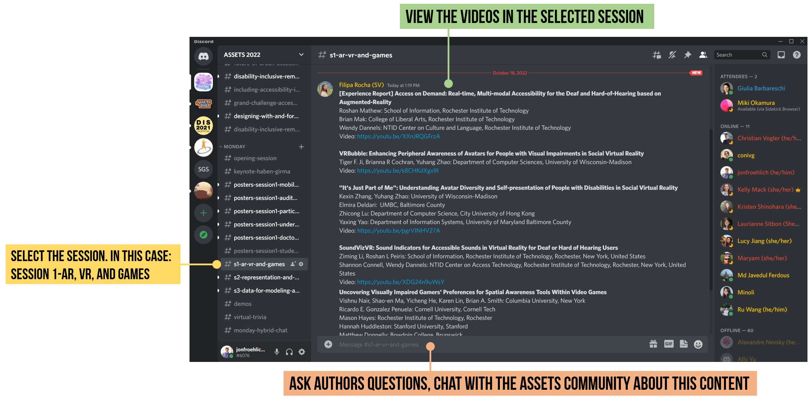
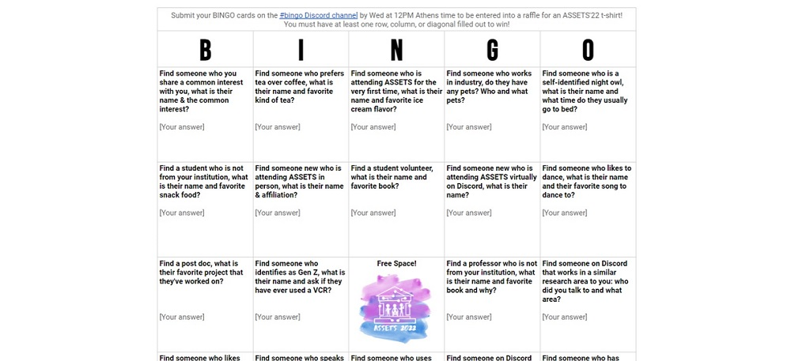
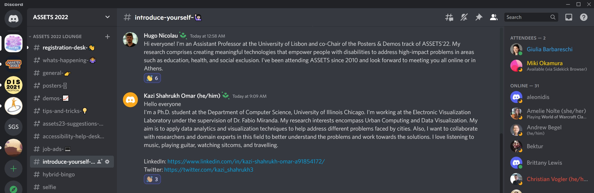

Attending Virtually
October 23-26, 2022
For the first time in our conference history, we are offering a lightweight virtual option for ASSETS. Even if you cannot come to Athens, we hope you will engage with our conference content and community! Please see our Attending Overview page for registration options.
Once registered, join us on Discord during the conference to interact with both virtual and in-person attendees!
Virtual Conference Overview
The ASSETS'22 virtual experience is primarily asynchronous via the text chat platform Discord, which we used successfully during the pandemic when ASSETS was fully virtual (ASSETS'20 and ASSETS'21). We will also be using YouTube and, for two virtual-oriented events, Zoom. As a reminder, none of the ASSETS'22 content will be live-streamed—see the Attending Overview page.
Discord will be the place to chat with both virtual and in-person attendees, to ask and respond to questions about conference content, to get links to ASSETS'22 videos and papers, and more! Once you've registered for the conference on CVENT, you can join us on Discord here. Start by introducing yourself in the appropriately named "#introduce-yourself" channel! 👋
Virtual/Hybrid Events Overview
In addition, we will host the following events aimed at building community between virtual attendees and bridging virtual and in-person worlds. There are two synchronous events ⌚, which will take place via Zoom with professional captioning and ASL interpreters. For these events, we've listed multiple timezones for convenience. The Zoom links will be published on Discord.
| Event | Time | Description |
|---|---|---|
| Watch Videos and Ask Questions | Anytime | All authors have created pre-recorded videos with caption files. Join us on Discord for the video links. Ask questions of authors and discuss content with the community on Discord. |
| Hybrid Bingo | Anytime | Play ASSETS B-I-N-G-O. Meet new people. Have fun! The winner will receive an amazing ASSETS'22 t-shirt. |
| Hybrid Crossover Sessions | Multiple times/day | During specific moments each day, we will encourage both virtual and in-person attendees to visit Discord and engage in discussion. |
| Virtual Trivia ⌚2-hr synchronous event via Zoom! | Mon, Oct 24 3PM Seattle (GMT-7) Mon, Oct 24 6PM New York (GMT-4) Tue, Oct 25 6AM Beijing (GMT+8) Tue, Oct 25 9AM Melbourne (GMT+11) |
Join us for a special ASSETS-oriented trivia officiated by professional trivia expert Oliver Chang. For the Zoom link, check the #virtual-trivia channel on Discord. |
| Roundtable Discussions ⌚1-hr synchronous event via Zoom! | Tue, Oct 25 4PM Seattle (GMT-7) Tue, Oct 25 7PM New York (GMT-4) Wed, Oct 26 7AM Beijing (GMT+8) Wed, Oct 26 10AM Melbourne (GMT+11) |
We will host a virtual networking opportunity of community roundtable discussions. If possible, please register to attend beforehand for planning purposes. For the Zoom link, check the #virtual-round-tables channel on Discord. |
Watch Videos and Ask Questions
In the ASSETS'22 Discord, we have content organized by session for Monday, Tuesday, and Wednesday—see program. Each session is given its own channel. For example, the first full paper session entitled Session 1: AR, VR, and Games is in the Discord channel #s1-ar-vr-and-games. For full paper and poster channels, you can view the authors pre-recorded videos on YouTube with captions.
Join these channels and others to ask authors questions and engage with the community about conference content. In-person attendees can post observations or ask questions in real-time in reaction to talks or poster presentations; virtual attendees can view videos and ask questions, which authors can answer asynchronously!
The more people participate in Discord, the better. We can do it! 💪

Hybrid Bingo
To help encourage and support crossover conversation between in-person and virtual attendees, we've created the first annual ASSETS Hybrid Bingo game. To play, duplicate this Google Sheet Bingo Card and start filling in the squares. Each square requires that you interact with a different person.
Submit your BINGO cards by 12PM Athens time (GMT+3) on the #bingo Discord channel to enter into a raffle to win an amazing ASSETS'22 t-shirt designed by Professor Liang He.

Hybrid Crossover Sessions
Each morning and afternoon, we have specified certain times in the Conference Program as "hybrid crossover events" to encourage virtual and in-person attendees to check-in on Discord together. There are specific channels where you can join the conversation about topics for that day, you can visit and engage with virtual content and presenters, or you can use this time to reach out to other attendees and meet synchronously on video conferencing platforms (self-arranged).
Authors, make sure you check your session channels and respond to questions!

Virtual Trivia
To help virtual attendees network together and have fun, we are excited to host an ASSETS'22 Virtual Trivia run by the fantastic Oliver Chang at Speakeasy Trivia. We have worked with Oliver and the ASSETS Accessibility Chairs to make this event as accessible as possible: we will have professional captioning and ASL services.
This is a synchronous event hosted over Zoom. Please see the Discord channel #virtual-trivia for the Zoom link. For convenience, we have listed the timing across sample timezones:
- Mon, Oct 24 3PM Seattle (GMT-7)
- Mon, Oct 24 6PM New York (GMT-4)
- Tue, Oct 25 6AM Beijing (GMT+8)
- Tue, Oct 25 9AM Melbourne (GMT+11)
The trivia facilitator will be in a Zoom room and teams will be split into individual Zoom breakout rooms to discuss and answers. Each team can choose to engage fully on Zoom or host team discussions in other more accessible ways (e.g., via a Discord text or audio only channel). Please reach out to hybrid-assets22@acm.org if you have any questions or concerns.

Virtual Roundtable Discussions
Finally, to help bring people together under shared topics of interest, we will host virtual roundtable discussions via Zoom—again with professional captioning and ASL services. Various ASSETS community members will facilitate discussions about a topic of their choice. If possible, please register in advance via this Google Form and join the #virtual-round-tables channel on Discord.
Like Virtual Trivia, this is a synchronous event hosted over Zoom. For convenience, we have listed the timing across sample timezones:
- Tue, Oct 25 4PM Seattle (GMT-7)
- Tue, Oct 25 7PM New York (GMT-4)
- Wed, Oct 26 7AM Beijing (GMT+8)
- Wed, Oct 26 10AM Melbourne (GMT+11)